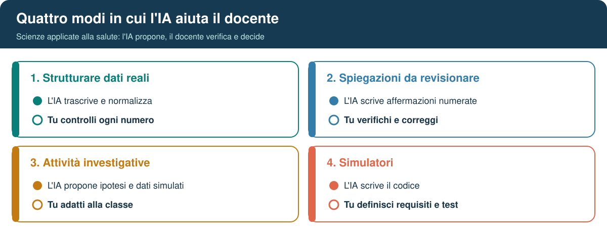
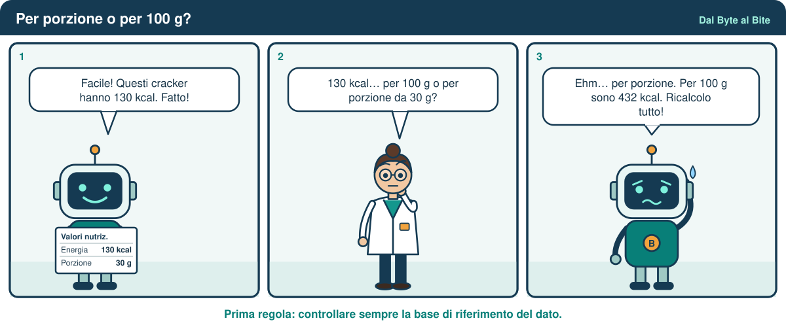
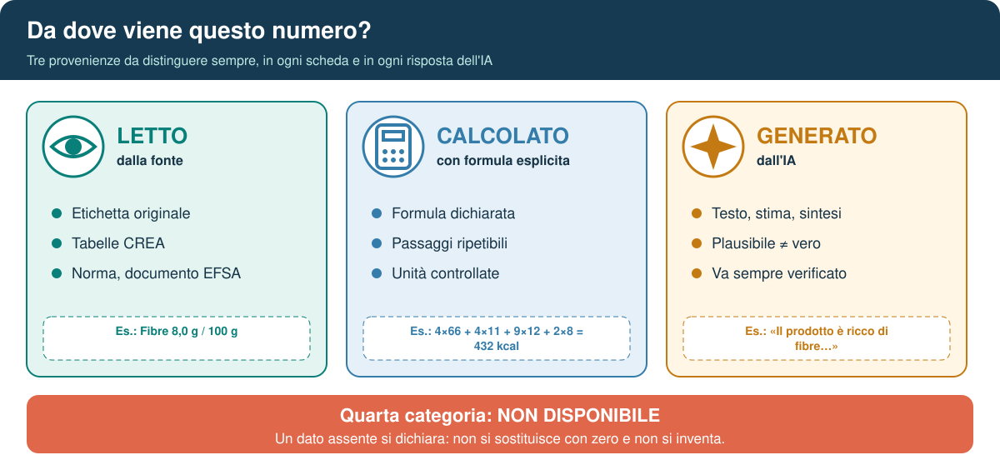
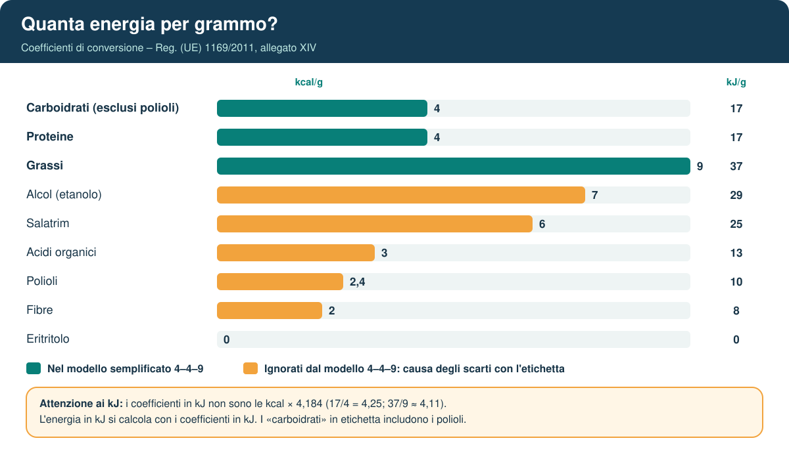
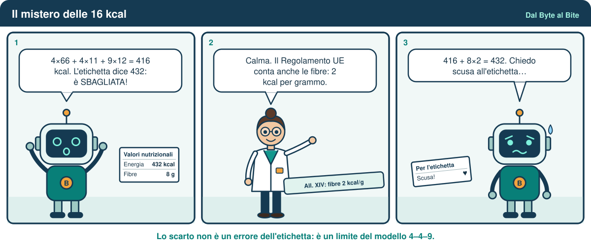
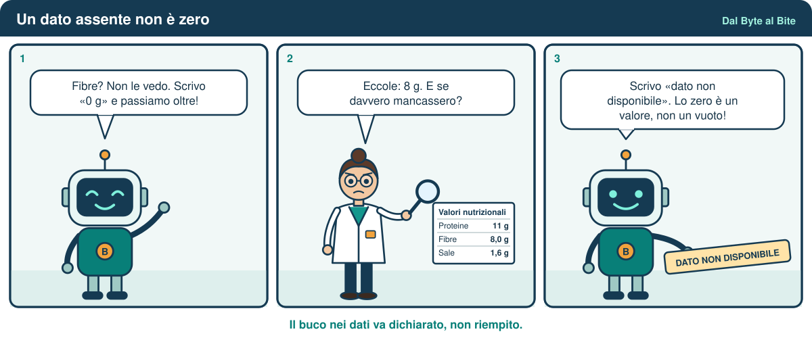
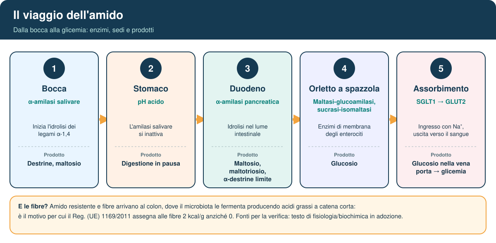
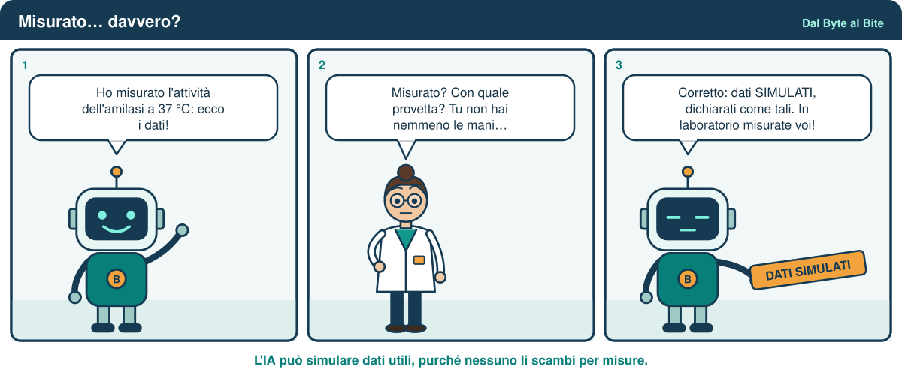
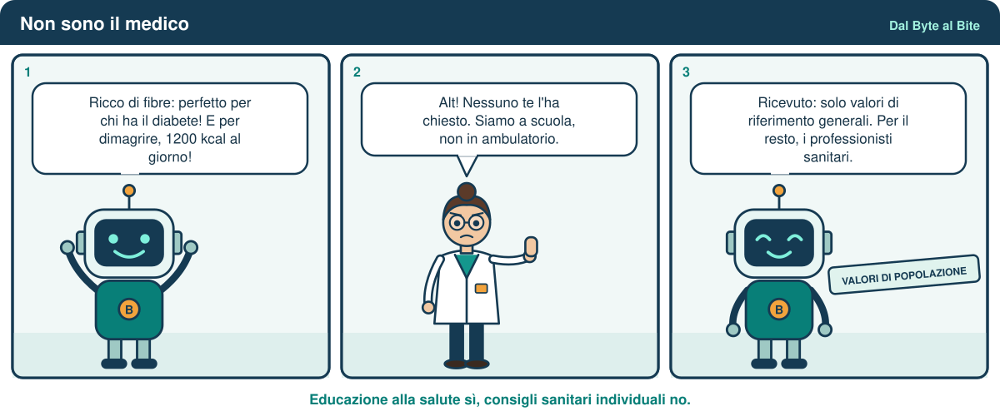

Il cibo diventa dato
Lezione 1 · 24 novembre 2026 · 14:00–18:00
Come l'intelligenza artificiale può aiutarci a insegnare alimentazione, energia e movimento, senza smettere di verificare.


Ore 10:05, palestra.
Uno studente apre lo zaino: barretta «proteica», bevanda «energetica», smartphone.
«Prof, ho chiesto all'IA quanto devo correre per smaltire la barretta. Dice due ore.»
Chi risponde? Molto spesso, voi.
Il cibo è un dato. Il movimento è un dato. La salute no.
 Lezione 1 · oggiLeggere l'etichetta di una barretta sportiva come uno scienziato, e scoprire dove l'IA sbaglia.
Lezione 1 · oggiLeggere l'etichetta di una barretta sportiva come uno scienziato, e scoprire dove l'IA sbaglia. Lezione 2 · 15 dicembreMET ed energia in movimento: un simulatore costruito con l'IA, validato con i test.
Lezione 2 · 15 dicembreMET ed energia in movimento: un simulatore costruito con l'IA, validato con i test. SempreValori di popolazione, niente diete, niente sensi di colpa. Nucleo «Salute, benessere, sicurezza e prevenzione».
SempreValori di popolazione, niente diete, niente sensi di colpa. Nucleo «Salute, benessere, sicurezza e prevenzione».Quattro ore, due laboratori
Possiamo fidarci dell'IA che legge
l'etichetta di una barretta sportiva?
Attività (10 min)
A coppie: scrivete tre criteri per riconoscere una risposta verificabile. Poi li confrontiamo e ne scegliamo tre condivisi.
Quattro modi in cui l'IA aiuta il docente

Prima di cominciare… una vignetta

Da dove viene questo numero?

Caccia all'errore: sei errori in una risposta
Etichetta: «Sale 1,6 g». Quanto sodio contiene?
Reg. (UE) 1169/2011, allegato I: sale = sodio × 2,5, quindi sodio = 1,6 / 2,5 = 0,64 g.
Quattro trappole dell'etichetta
La regola ufficiale: allegato XIV

L'etichetta A dichiara 432 kcal. Il 4–4–9 dà 416. Perché?
8 g di fibre × 2 kcal/g = 16 kcal: 416 + 16 = 432. Lo scarto è un limite del modello, non un errore dell'etichetta.
Etichetta A, per 100 g
C 66 g · P 11 g · G 12 g · fibre 8 g
Scarto: 16 kcal
Tutto dovuto alle fibre. L'etichetta è coerente: è il modello semplificato a non contarle.
Per porzione (30 g): 432 × 0,3 ≈ 130 kcal.
Intanto, Bitto…

L'IA legge davvero l'etichetta?
- Usate il prompt 1 sull'etichetta A o B (o una reale).
- Compilate la Scheda 1: dato, base, valore a 100 g, provenienza.
- Ricalcolate l'energia con 4–4–9 e con l'allegato XIV.
- Spiegate lo scarto e quale componente lo produce.
Regola d'oro
Non sostituire un dato assente con zero. Ogni numero ha una provenienza.
Agisci come assistente scientifico per docenti di Scienze naturali del liceo scientifico. Analizza SOLTANTO i dati dell'etichetta che ti fornirò. Estrai ingredienti, allergeni dichiarati e valori nutrizionali, indicando per ciascun valore se è riferito a 100 g o alla porzione. Normalizza i valori a 100 g soltanto se porzione e quantità sono esplicite. Se mancano dati, scrivi «dato non disponibile» e non sostituirli con zero. Ricalcola l'energia in kcal e in kJ con i coefficienti dell'allegato XIV del Regolamento (UE) 1169/2011 (carboidrati esclusi i polioli 4 kcal/g e 17 kJ/g; proteine 4 kcal/g e 17 kJ/g; grassi 9 kcal/g e 37 kJ/g; fibre 2 kcal/g e 8 kJ/g; polioli 2,4 kcal/g e 10 kJ/g), mostrando i passaggi, e confrontala con l'energia dichiarata. Restituisci una tabella con dato originale, unità, base di riferimento, dato normalizzato e provenienza (letto o calcolato). Individua tre punti da verificare manualmente. Non formulare diagnosi, giudizi di salubrità o consigli sanitari.
Revisione collettiva: la trappola dello zero

Pausa · 10 minuti
Si riparte con la biochimica: il viaggio dell'amido.
Il viaggio dell'amido

Corretta, imprecisa o errata?
| Affermazione generata (esempi) | Verdetto |
|---|---|
| L'α-amilasi salivare inizia l'idrolisi dell'amido in bocca. | ✓ corretta |
| Nello stomaco l'amilasi salivare completa la digestione dell'amido. | ✗ errata |
| L'amilasi pancreatica trasforma l'amido direttamente in glucosio. | ~ imprecisa |
| Il glucosio entra negli enterociti tramite SGLT1 insieme al sodio. | ✓ corretta |
Per ogni affermazione: verdetto, fonte consultata e riscrittura se necessario.
Sei un docente di biologia del liceo scientifico. Spiega in non più di 250 parole, per una classe quarta, come l'organismo umano digerisce l'amido: enzimi coinvolti e loro sede d'azione, prodotti di ciascuna tappa, assorbimento intestinale del glucosio e collegamento con la glicemia. Dopo la spiegazione elenca tutte le affermazioni scientifiche in forma numerata, una per riga, e per ciascuna indica quale tipo di fonte potrebbe confermarla (libro di testo universitario, documento EFSA, linee guida CREA). Non fornire consigli alimentari o sanitari personali.
Progettare un'attività investigativa di 40 minuti
Variante per scienze motorie (prompt 3-bis): intensità dell'esercizio, frequenza cardiaca e scala di Borg, da svolgere davvero in palestra.
Sei un co-progettista di didattica delle Scienze naturali. Prepara per una classe quarta o quinta liceo scientifico un'attività investigativa di 40 minuti sul ruolo degli enzimi nella digestione degli amidi. Indica prerequisiti, una domanda scientifica, tre ipotesi degli studenti, variabili e controlli, una tabella di dati simulati ESPLICITAMENTE dichiarati come tali, cinque domande graduate e una rubrica di verifica. Collega la discussione finale a un tema di educazione alla salute (alimentazione equilibrata, lettura dell'etichetta) con rimandi a fonti istituzionali, senza indicazioni cliniche o individuali. Evidenzia gli aspetti da controllare su fonti scientifiche. Non presentare dati simulati come misure reali.
Sei un co-progettista di didattica delle Scienze motorie e sportive. Prepara per una classe del liceo scientifico un'attività investigativa di 40 minuti, da svolgere in palestra, sulla relazione tra intensità dell'esercizio (camminata, corsa lenta, corsa a ritmo sostenuto), frequenza cardiaca e percezione dello sforzo (scala RPE di Borg). Indica prerequisiti, una domanda scientifica, tre ipotesi degli studenti, variabili e controlli, la procedura di misura della frequenza cardiaca al polso o con cardiofrequenzimetro, una tabella di dati simulati ESPLICITAMENTE dichiarati come tali, cinque domande graduate e una rubrica. Collega la discussione ai MET del Compendium of Physical Activities e alle raccomandazioni OMS sull'attività fisica per gli adolescenti. Prevedi indicazioni di sicurezza e adattamenti per studenti esonerati o con limitazioni. Non registrare dati sanitari individuali con il nome degli studenti, non formulare indicazioni cliniche o individuali, non presentare dati simulati come misure reali.
Dati simulati: dichiararli sempre

Sei criteri, punteggio 0–2
- Chiarezza della domanda scientifica
- Fattibilità in 40 minuti
- Coerenza scientifica
- Dati simulati dichiarati
- Variabili e controlli corretti
- Aggancio alla salute senza indicazioni individuali
0 · 1 · 2
assente · parziale · pienamente soddisfatto
Totale su 12. Ogni punteggio basso va accompagnato da una proposta di miglioramento.
Il confine da non superare

Biglietto d'uscita
Prima di uscire: «Esporta tutti i miei elaborati» nella pagina del corso e caricate il file nella cartella di consegna.